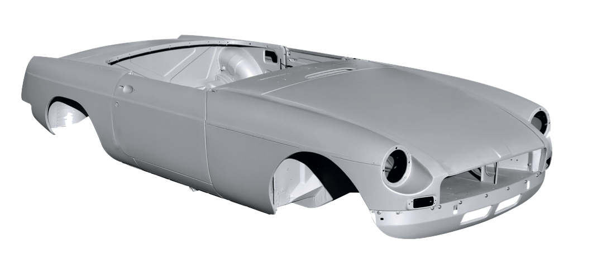
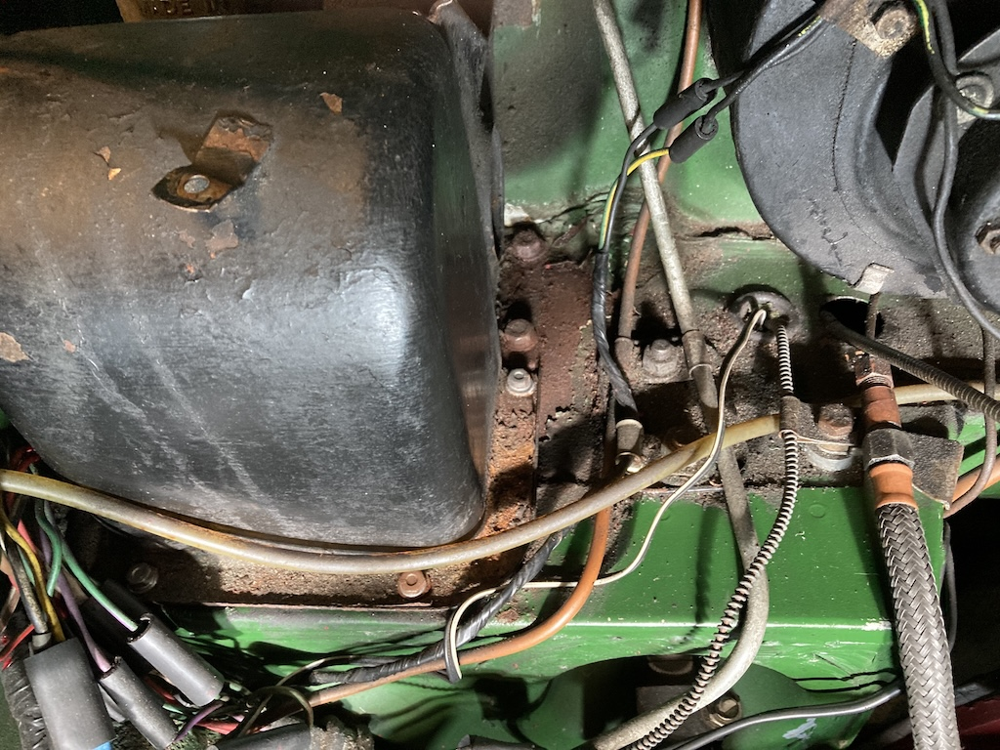
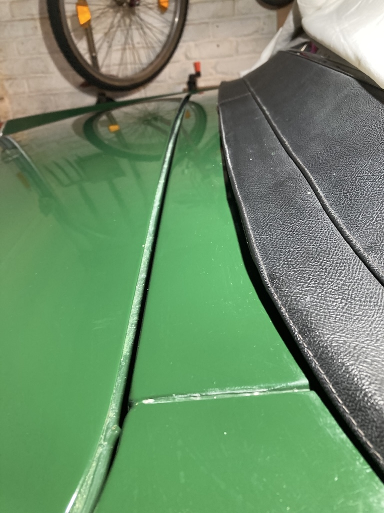
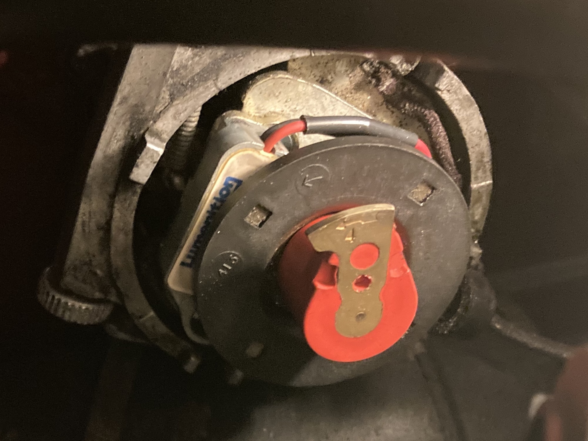
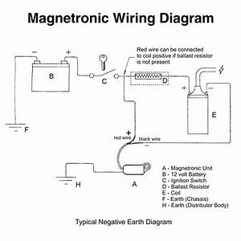
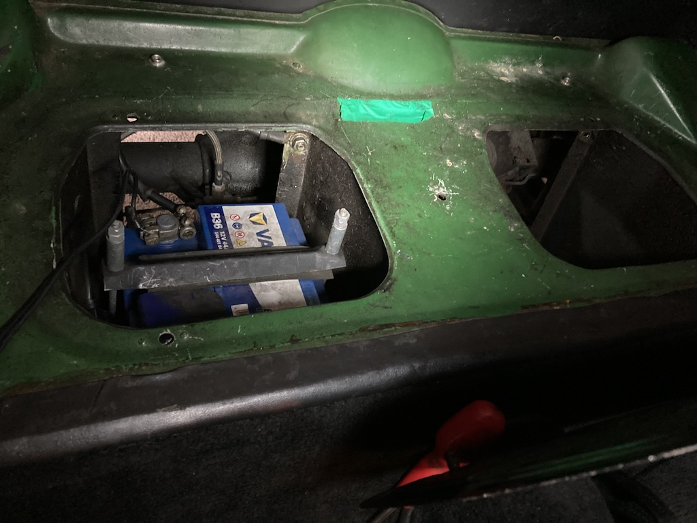
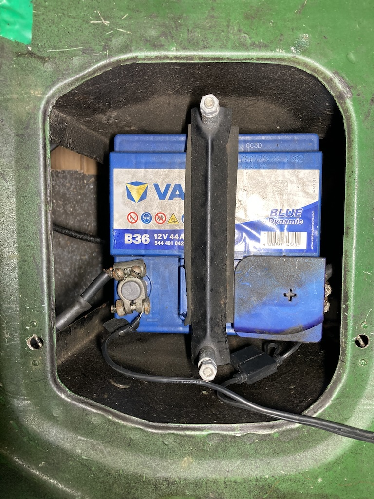
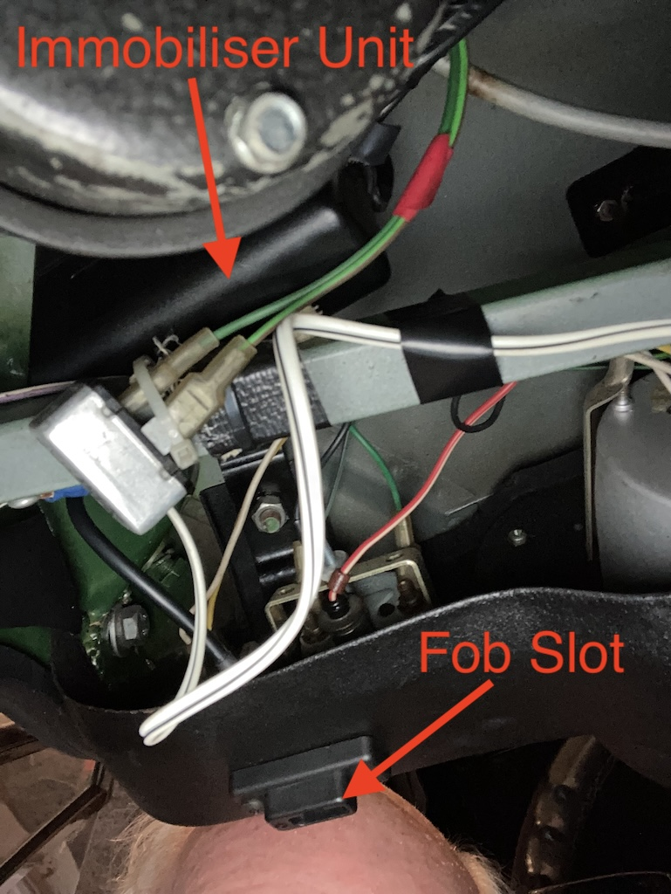

When you buy a new car you generally know what you are getting. You have the manufacturers marketing material and the dealer can usually answer other questions that you may have. And in any case, you are probably not particularly interested in exactly how various parts of the car work, just what features are available. However, when you take possesion of a new (to you) classic car you don't really know what it is that you are getting, even if you've had a good look over it before you shook hands with the then owner. One thing is for sure, you have a lot to learn.
Here I will attempt to provide notes on some of the things that I found, including modifications, when I examined the car and the file of invoices that came with it.
| ⬥ Heritage Bodyshell | ⬥ Engine Compartment Corrosion |
| ⬥ Boot Lid | ⬥ Ignition System |
| ⬥ Battery Conversion | ⬥ Immobiliser |
Heritage Bodyshell
When the car was advertised by Milestone Classics it was said that it had been re-shelled about 25 years ago, in other words around the year 2000. However, the file of invoices that came with the car has no mention of a new bodyshell. And there is no body number plate in the place that you would expect to find one. However, following an email enquiry, Robert Hoare of BMH suggested that I look at the seam between the outer and inner wing on the nearside. As you can see here the body has the number BMH 001768.
Again according to Robert Hoare, “This is one of the earlier shells produced by BMH, back when we were owned by Rover. Unfortunately, when the company was sold, a number of records from this period were lost. As a result, I am unable to give you the specific date of manufacture for your bodyshell, all I can really say is that it was manufactured prior to 1992.”
It seems that BMH started making new MGB bodyshells in 1988 and the invoices for the car start in January 1998. So, although the bodyshell could have been made sometime between 1988 and 1992, it is difficult to reconcile the dates. Robert thought that, looking at the number, the body was probably made in 1991 or 1992. So I don't know why there is nothing about it in the invoices file.
Engine Compartment Corrosion
When I first examined the car I noticed that someone had not been too carefull topping up either the brake or clutch master cylinders. Consequently the spilled fluid has removed the paint around these units. A bit of remedial work is required.
Boot Lid
Before I bought the car I examined the panel gaps and looked along the sides for any 'wobles'. However, I din't notice that the top of the boot lid is a little proud of the rear deck. The photo doesn't show it as well as running your finger over the gap, although the outer edges fit against the body well. So lowering the hinges using shims may not work.
 When I opened the boot toward the end of a very damp January I found mold on my toolbag. Apart from the slight 'bulge' in the boot lid I noticed that there was a gap in the rubber seal at the top.
When I opened the boot toward the end of a very damp January I found mold on my toolbag. Apart from the slight 'bulge' in the boot lid I noticed that there was a gap in the rubber seal at the top.
Ignition System
In December 2000, a Lumenition Magnetronic electronic ignition system was fitted. It is completely contained within the distributor body, replacing the contact points and condenser.
The device works by rotating four magnets, which use the Hall Effect to trigger the spark to the plugs. The diagram shows the wiring. In our case there is no ballast resistor.
Battery Conversion
The MGB has two 6 volt batteries (wired in series to give 12 volts) located under a panel behind the seats. It seems that in April 2011 these two batteries were replaced with a single 12 volt battery that fit into one of the two containers. It was handy that I looked at the battery, since the bolt on the earth connector was loose.
In this photo you can see an additional cable. This is a two-wire cable connected across the battery and having, on its end, a connector. I assume that it was used to plug in a battery charger or something like an inspection lamp.
Immobiliser
When I bought the MGB I knew that it had an immobiliser fitted. However, I discovered that, although there were two sets of keys, there was only one immobiliser fob. From the invoice records I discovered that the immobiliser is an Apllo 2002 and that, not only is the unit unavailable, but new fobs cannot now be bought.
I had two options, either stay with the single fob and hope that I don't loose it or remove the immobiliser. I tried to find a wiring diagram, but was told that it wouldn't help since "all the wires are black". You can see from the photo taken under the dashboard that the immobiliser consists of three parts. The small black unit that is screwed to the underside of the dash and into which you insert the fob to de-activate the immobiliser. The immobiliser unit itself. And the immobiliser flasher unit.
When thinking about how an immobiliser should work I assumed that the immobiliser relay would supply power to the fuel pump and to the starter relay, disabling both until the device was activated. However, I discovered that the fuel pump 'ticks' when the igintion key is turned, even though the immobiliser has not been activated. So it is only removing power to the starter relay.